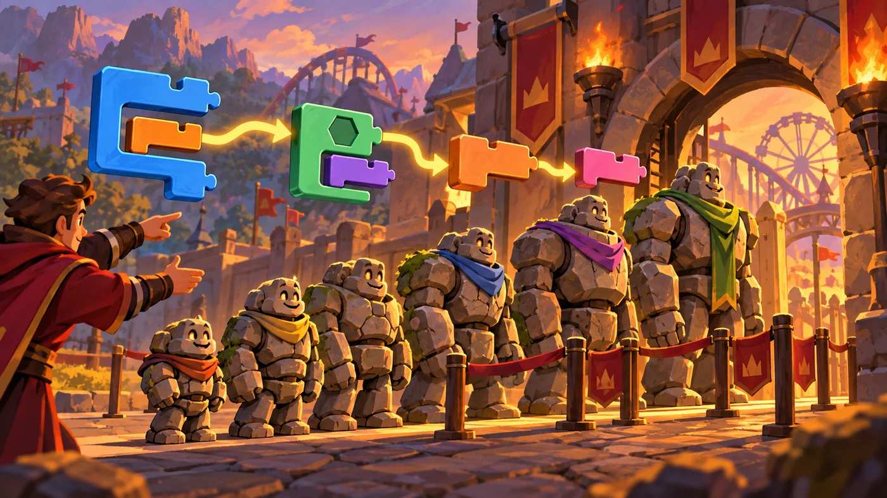
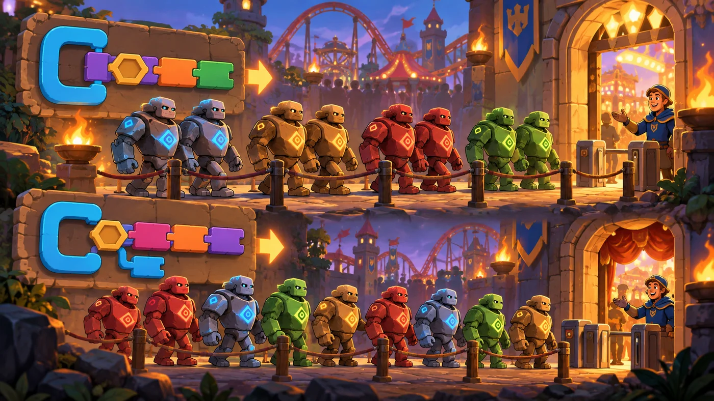

扣哒考级 · GESP 图形化 四级 · 第 4 单元 | 机械乐园 COGWHEEL PARK
大小秤 排序的概念与稳定性
Sorting and Stability

戈登
机械师 · 你的向导
乐园门口架着一架大秤，排队的石人高矮不一。
管理员一拍秤盘："按高矮站好！"——队伍很快从矮到高排成一线。
你注意到一件怪事：两个一样高的石人，一个站到了前面，另一个却退到了后面。 "这就是"不稳定"。"戈登说，"排序不光要排对，还得看相等的那几个有没有被搅乱。"
管理员一拍秤盘："按高矮站好！"——队伍很快从矮到高排成一线。
你注意到一件怪事：两个一样高的石人，一个站到了前面，另一个却退到了后面。 "这就是"不稳定"。"戈登说，"排序不光要排对，还得看相等的那几个有没有被搅乱。"
戈登 · 机械师
这一单元只有一个概念要"咬住"：稳定性。判断方法特别简单：找出关键字相同的元素，看它们排完之后的先后有没有变。 变了就是不稳定。
三种常见排序里，只有选择排序不稳定——这一条几乎每年都考。
0 单元导语与目标
Before We Start
0.1 学习目标
- 理解排序：按某个标准把一串数据排成有序；
- 分清升序与降序；
- 理解排序的稳定性：关键字相同的元素，排序后相对先后是否保持不变；
- 会判断一个排序过程是否稳定（看相等元素有没有被打乱）；
- 知道"比较"和"交换"是排序的两个基本动作。
0.2 考纲对照
| 考纲知识块 | 考纲要求 | 本单元小节 |
|---|---|---|
| 4 排序 | 概念、稳定性 | 1.1～1.2、2.1～2.3、4.1～4.2 |
| （知识点详述第 3 条） | 理解排序的含义及排序算法的稳定性 | 3.1～3.3 |
"稳定性"是四级排序里最爱考、也最容易忘的一个概念。' '卷子上常给一段排序过程，问你"这样做稳定吗"。
1 排序是什么
What Is Sorting
1.1 按某个标准排成序
乐园门口架着一架大秤。排队的石人高矮不一，管理员一拍秤盘： "按高矮重新站好！"——队伍立刻从矮到高排成一线。

assets/illustrations/scratch-L4-04-01_size_scale.webp
【配图位】乐园门口一架大秤，排队入园的石人按高矮被重新排成整齐队列。（提示词见《GESP配图清单与AI绘图提示词》第四节 4-4）
图 2（SVG）：排序的三个要素
1.2 升序与降序

assets/illustrations/scratch-L4-04-02_stability_pairs.webp
【配图位】两排一模一样高矮的双胞胎石人，一排保持原有先后、一排被打乱，用于对比"稳定性"。（提示词见《GESP配图清单与AI绘图提示词》第四节 4-4）
图 4（SVG）：升序与降序
打个比方：排序就像整理书——你可以按厚度排、按书名拼音排、按借阅次数排。标准不同，排出来的顺序就不同，但"从小到大"这个方向是一致的。
2 排序的稳定性
Stability
2.1 什么是稳定性
图 5（SVG）：稳定性
一条判定口诀：相等的元素，排完还是原来的先后顺序 → 稳定；被打乱了 → 不稳定。
注意：只有"相等"的元素才有"稳不稳定"的说法——不相等的元素本来就要换位置。
注意：只有"相等"的元素才有"稳不稳定"的说法——不相等的元素本来就要换位置。
2.2 为什么要在意它
图 6（SVG）：为什么要稳定
2.3 稳定与不稳定的对比
图 7（SVG）：稳定 vs 不稳定
看出来的关键：排序前小明在小红前面，两人分数一样。
排完之后小明还在小红前面 → 稳定；小明被挤到后面 → 不稳定。
排完之后小明还在小红前面 → 稳定；小明被挤到后面 → 不稳定。
3 排序的两个基本动作
Compare and Swap
3.1 比较：谁大谁小
重点示例：比较两块牌
图形化积木
要点 排序的第一步永远是"比一比"。比较的结果是"成立 / 不成立"，正好能塞进判断里
3.2 交换：换个个儿
重点示例：位置对调（用临时变量帮忙）
图形化积木
要点 交换两个位置需要第三者帮忙：先把其中一个存到临时变量，再互相替换
打个比方：交换两杯水，得先找一个空杯子。
直接把 A 倒进 B，A 原来的东西就没了——所以必须先"倒进空杯（临时变量）"。
直接把 A 倒进 B，A 原来的东西就没了——所以必须先"倒进空杯（临时变量）"。
3.3 一趟一趟来
图 8（SVG）：一趟一趟来
为什么不会白比？每走完一趟，至少有一个元素"落定"了它的最终位置。所以趟数够多，整串一定会有序——这就是排序算法一定能结束的原因。
4 怎么判断稳不稳定
Judging Stability
4.1 看相等的元素有没有保持原序
图 9（SVG）：判断稳定性的三步
4.2 常见排序的稳定性
| 排序方法 | 是否稳定 | 简单理由 |
|---|---|---|
| 冒泡排序 | 稳定 | 只有"前一个比后一个大"时才交换，相等的两个不动 |
| 插入排序 | 稳定 | 往已排好的部分里插，遇到相等就停在它后面 |
| 选择排序 | 不稳定 | 会把后面最小的换到前面，可能跨过相等元素打乱先后 |
| 计数排序 | 稳定（实现得当时） | 按关键字依次放入，先来先放 |
要特别注意选择排序：它每趟"挑出最小的放到前面"，这个"跨过去交换"的动作很可能把两个相等的元素前后调了个儿。
所以选择排序是典型的不稳定排序。
所以选择排序是典型的不稳定排序。
图 10（SVG）：三种排序的稳定性
5 代码实战
Level Practice
这一关要按"大小"排队通过：比较大小、该换就换—— 这就是排序的两个基本动作在关卡里的样子。
关卡
Killdeer 操作
进入关卡 →
故事：
乐园的进口有一段窄道，一次只能过一个人。队伍里的石人高矮不一，
你得两两比较，让矮的先进、高的往后站，直到整队都排好。

assets/stages/py-L4-04-stage1_killdeer.webp
【关卡截图位】请把《Killdeer 操作》的游戏画面截图放到此处（放入 assets/stages/ 目录，文件名为 py-L4-04-stage1_killdeer.webp）。
思路：用两层循环：外层决定"跑几趟"，内层负责"这一趟从头比到尾"。 比较就是"谁大谁小"，交换就是"两个位置对调"——排序说到底只有这两件事。
重点示例：一趟比较，该换就换
图形化积木
读法 把第 i 项和它后面那项比一比：前面的大就交换，然后 i 加 1，继续比下一对
自己试一试：这段只写了"一趟"（外层再套一个循环就是完整排序）。想一想：为什么要用"临时"这个变量？去掉它试试看，会发生什么？
这一关的骨架就是冒泡排序的一趟：' '"比较 → 该换就换 → 往后挪一位"。外层再套一圈"趟数"，整串就排好了。
和本单元的关系：如果只写"前面的大于后面的就换"（用"大于"而不是"大于等于"），两个相等的元素就永远不会被交换——这就是冒泡排序稳定的原因。
去扣哒世界闯这一关 →
6 常见陷阱
Common Traps
陷阱 1：把"稳定"理解成"排得准"。稳定性不是说结果更正确，而是说"相等元素的相对先后保持不变"。
正确理解：稳定与不稳定都能排对，差别只在于相等元素之间的先后。
正确理解：稳定与不稳定都能排对，差别只在于相等元素之间的先后。
陷阱 2：以为所有排序都稳定。冒泡和插入是稳定的，选择排序不稳定。
怎么记：选择排序要把最小的"跨过去换到前面"，一跨就可能打乱相等元素的先后。
怎么记：选择排序要把最小的"跨过去换到前面"，一跨就可能打乱相等元素的先后。
陷阱 3：交换时不借临时变量。直接"把 A 替换为 B、再把 B 替换为 A"，结果两个位置都变成了原来的 B。
正确做法：先用一个临时变量把其中一个存起来。
正确做法：先用一个临时变量把其中一个存起来。
陷阱 4：数不清"一趟"到底做了几次比较。n 个元素的一趟通常是 n − 1 次比较（相邻两两比）。
正确做法：画个小例子数一遍，别硬记。
正确做法：画个小例子数一遍，别硬记。
7 题目练习
Practice
第 1 题改编自 2026 年 6 月 · 图形化编程 四级 第 15 题，其余为原创练习题。
改编自 2026 年 6 月 · 图形化编程 四 级 · 第 15 题单选题
有一段程序把列表里的数按奇偶分开处理，最后小猫说出的内容是（ ）。
A.8 6 4 2 0 和 1 3 5 7 9
B.8 6 4 2 0 和 9 7 5 3 1
C.0 2 4 6 8 和 1 3 5 7 9
D.小猫无法说出列表中的内容
B.8 6 4 2 0 和 9 7 5 3 1
C.0 2 4 6 8 和 1 3 5 7 9
D.小猫无法说出列表中的内容
查看答案与详解
答案：A。这是一道"按顺序输出列表内容"的题：程序把偶数按从大到小排在前面、奇数按从小到大排在后面，然后从头到尾依次说出来，所以得到
B 错：后半段被倒过来了——输出时是"从头走到尾"，不会自己反向；
C 错：前半段被倒过来了；
D 错：列表当然能一项一项说出来（"第 n 项" + 循环遍历）。
读题关键：要分清"存进去时是什么顺序"和"说出来时是什么顺序"。列表不会替你把顺序翻过来——存的时候怎么排，说的时候就是什么样。
对应小节4.2 遍历列表与顺序。
8 6 4 2 0 和 1 3 5 7 9。B 错：后半段被倒过来了——输出时是"从头走到尾"，不会自己反向；
C 错：前半段被倒过来了；
D 错：列表当然能一项一项说出来（"第 n 项" + 循环遍历）。
读题关键：要分清"存进去时是什么顺序"和"说出来时是什么顺序"。列表不会替你把顺序翻过来——存的时候怎么排，说的时候就是什么样。
对应小节4.2 遍历列表与顺序。
原创练习题单选题
排序前队伍是"小明 90 分、小红 90 分、小刚 85 分"，按分数从高到低排序后变成"小红 90、小明 90、小刚 85"。这说明这次排序（ ）。
A.是稳定的
B.是不稳定的
C.排错了
D.无法判断
B.是不稳定的
C.排错了
D.无法判断
查看答案与详解
答案：B。小明和小红分数相同，排序前小明在前；排完之后小红跑到了小明前面——相等元素的相对先后被改变了，所以不稳定。
A 错：稳定的话，小明应该还在小红前面；
C 错：分数顺序本身是对的（90 在 85 前），没有排错；
D 错：题面已经把前后结果都给了，可以判断。
对应小节2.1、2.3 什么是稳定性。
A 错：稳定的话，小明应该还在小红前面；
C 错：分数顺序本身是对的（90 在 85 前），没有排错；
D 错：题面已经把前后结果都给了，可以判断。
对应小节2.1、2.3 什么是稳定性。
原创练习题单选题
在三种经典排序中，通常不稳定的是（ ）。
A.冒泡排序
B.插入排序
C.选择排序
D.以上都不稳定
B.插入排序
C.选择排序
D.以上都不稳定
查看答案与详解
答案：C。选择排序每趟要"把最小的跨过去换到前面"，这个跨越动作可能把两个相等的元素前后调个儿，所以不稳定。
A、B 错：冒泡只在"前面的大于后面的"时才交换，插入遇到相等就停在后面——两者都不打乱相等元素的先后，都是稳定的。
对应小节4.2 常见排序的稳定性。
A、B 错：冒泡只在"前面的大于后面的"时才交换，插入遇到相等就停在后面——两者都不打乱相等元素的先后，都是稳定的。
对应小节4.2 常见排序的稳定性。
原创练习题单选题
要在排序时交换列表中两个位置的值，正确的做法是（ ）。
A.把第 i 项替换为第 i+1 项，再把第 i+1 项替换为第 i 项
B.先用一个临时变量存下第 i 项，再依次互相替换
C.直接把两项相加再相减
D.用"删除"再"加入"的方法
B.先用一个临时变量存下第 i 项，再依次互相替换
C.直接把两项相加再相减
D.用"删除"再"加入"的方法
查看答案与详解
答案：B。交换必须借一个"空杯子"（临时变量）：
临时 ← 第 i 项；第 i 项 ← 第 i+1 项；第 i+1 项 ← 临时。
A 错：做第一步时第 i 项原来的值就被覆盖了，最后两个位置会变成同一个值；
C 错：数字相加相减也许能凑回来，但字符串就不行，不是通用做法；
D 错：又删又加会改变列表的项数，越弄越乱。
对应小节3.2 交换：换个个儿。
临时 ← 第 i 项；第 i 项 ← 第 i+1 项；第 i+1 项 ← 临时。
A 错：做第一步时第 i 项原来的值就被覆盖了，最后两个位置会变成同一个值；
C 错：数字相加相减也许能凑回来，但字符串就不行，不是通用做法；
D 错：又删又加会改变列表的项数，越弄越乱。
对应小节3.2 交换：换个个儿。
原创练习题多选题
关于排序，下面说法哪些是正确的（ ）。
A.排序要有一个标准（按什么排）和一个方向（升序或降序）
B."排序稳定"意味着关键字相同的元素，排序后相对先后不变
C.选择排序是稳定的
D."比较"和"交换"是排序过程中的两个基本动作
B."排序稳定"意味着关键字相同的元素，排序后相对先后不变
C.选择排序是稳定的
D."比较"和"交换"是排序过程中的两个基本动作
查看答案与详解
答案：A、B、D。
C 错：选择排序每趟把最小的跨过去交换到前面，容易打乱相等元素的先后，是不稳定的。
对应小节1.1、2.1、3.1～3.2、4.2 排序的概念。
C 错：选择排序每趟把最小的跨过去交换到前面，容易打乱相等元素的先后，是不稳定的。
对应小节1.1、2.1、3.1～3.2、4.2 排序的概念。
原创练习题判断题
在图形化编程中，"稳定"的排序算法并不能保证排序结果一定正确，它只是保证关键字相同的元素在排序后仍保持原来的相对先后。（ ）
查看答案与详解
答案：正确（√）。这是最容易误解的一点：稳定性与"排得对不对"是两件事。
稳定性只描述一件事：关键字相等的那些元素，排完之后相对先后有没有被打乱。
一个稳定的算法如果逻辑写错了，照样会排出错误结果。
对应小节2.1 什么是稳定性。
稳定性只描述一件事：关键字相等的那些元素，排完之后相对先后有没有被打乱。
一个稳定的算法如果逻辑写错了，照样会排出错误结果。
对应小节2.1 什么是稳定性。
8 本单元小结
Unit Summary
戈登 · 机械师
排序这一单元，试卷最爱考一个概念：稳定性。一句话定义：关键字相同的元素，排完之后相对先后不变 → 稳定。
再记三条：冒泡稳定、插入稳定、选择不稳定。
你在大小秤旁学到了什么
- 排序三要素：一批数据、一个标准、一个方向（升序 / 降序）；
- 稳定性：关键字相等的元素，排序后相对先后是否保持不变；
- 两个基本动作：比较（谁大谁小）与交换（借临时变量对调）；
- "一趟"：从头到尾比一轮；每趟至少有一个元素落定最终位置；
- 稳定性口诀：冒泡稳定、插入稳定、选择不稳定。
下一站：排队过山车
下一单元我们真的动手排——冒泡、插入、选择三种经典排序， 一列一列地把车厢排好，顺便把手算"一趟之后的结果"练熟。